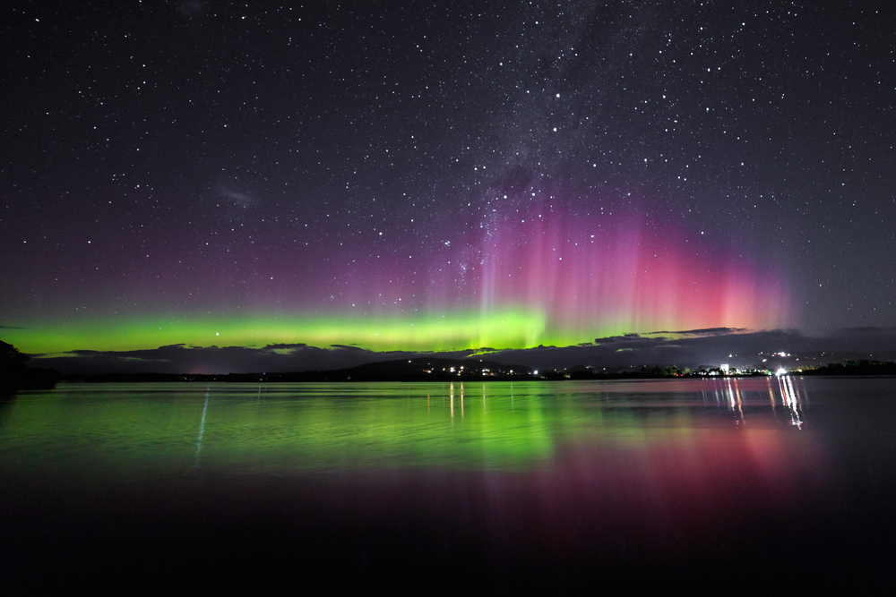
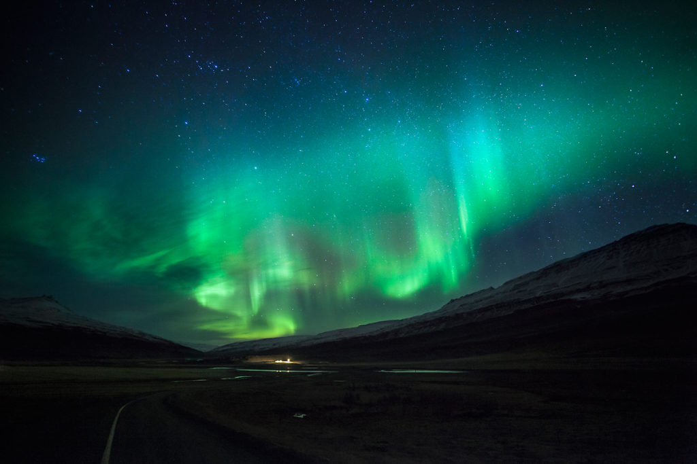

ZORZA POLARNA

✨ Co to jest zorza polarna (Aurora)?
Zorza polarna to piękne, naturalne zjawisko świetlne, które widać na nocnym niebie. Wygląda jak tańczące, kolorowe wstęgi światła.
☀️ Jak powstaje to zjawisko?
Powstanie zorzy jest wynikiem zderzenia cząstek pochodzących ze Słońca z gazami w ziemskiej atmosferze.
Elementy kluczowe:
- Wiatr słoneczny: Strumień naładowanych cząstek wysyłanych przez Słońce.
- Pole magnetyczne Ziemi: Kieruje te cząstki w okolice biegunów.
- Gazy atmosferyczne: Głównie tlen i azot, z którymi zderzają się cząstki słoneczne, powodując ich świecenie.
🌈 Dlaczego zorza ma różne kolory?
Kolor zależy od rodzaju gazu i wysokości zderzenia:
- Zielony (Najczęściej): Pochodzi od atomów tlenu.
- Czerwony (Rzadziej): Pochodzi od atomów tlenu na dużej wysokości.
- Niebieski/Fioletowy: Pochodzi od cząsteczek azotu.

🌍 Gdzie i kiedy najlepiej ją zobaczyć?
Gdzie?
Zorzę najlepiej obserwować w krajach położonych blisko biegunów (w tzw. pasach zorzowych):
- Norwegia, Islandia, Finlandia.
- Kanada, Alaska.
Kiedy?
Najlepszy czas to miesiące od września do marca (sezon zimowy), w nocy i z dala od świateł miasta.

Szymon Lasota 3i2T